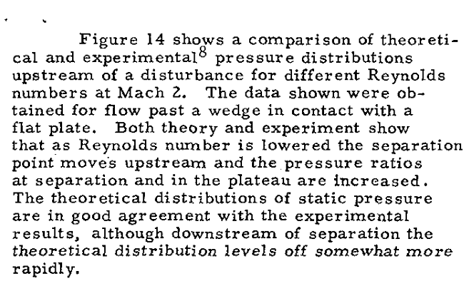
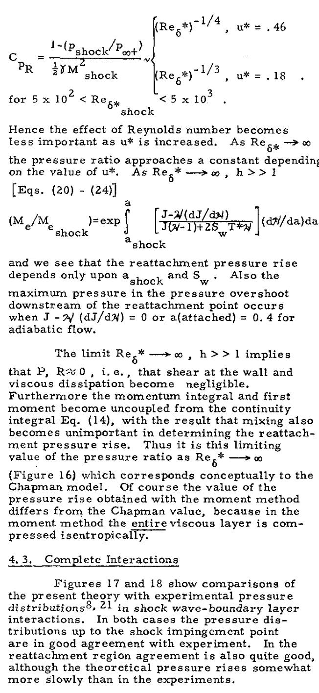
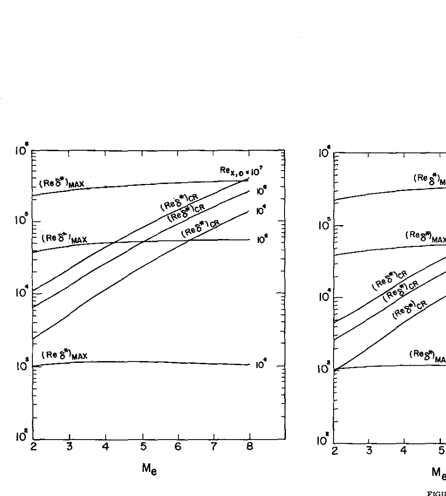

01中文摘要
研究外部超声速无粘流产生压升、经边界层上传并诱导层流分离的干扰。为描述分离与再附，采用积分/矩方法，在动量积分之外加入动量一阶矩，使速度与焓型线由单一参数表征而不显式依赖当地静压梯度。成功关键在于选用Stewartson反向流型线及其Cohen-Reshotko传热推广，多项式型线不适用。计算与Chapman、Hakkinen等超声速绝热实验吻合，能重现压力平台及上游干扰、下游再附的长度尺度；对M=6.5前向台阶自由干扰吻合至平台。冷却壁下理论预测存在“超临界”状态，光滑趋近分离不再可能，需经激波跃变进入亚临界流。
02阅读说明
理论分析（积分矩方法）并与实验对比，1964 年 AIAA 会议论文 Part I，全文 24 页扫描件。bundle 文本为 OCR，公式上下标、分式与希腊字母粘连严重；已回读原 PDF 第 7–12 页核对式 (1)–(30)，式 (17)–(19)、(27)–(28) 的个别符号仍受扫描质量限制。图件清单给出图 15、19、20、23 的抓图，图注多来自正文 OCR，曲线数值不可读，只能读趋势与作者文字结论。信息完整度较高：模型假设、剖面选择、三方程推导、亚/超临界判据、实验对比和方法局限均有实质内容；Part II（传热数值解）未包含。 文章类型：期刊
03一句话核心与三句话摘要
以两矩积分法统一描述层流边界层-激波干扰的分离与再附，并给出亚/超临界判据。
- 已有 Kármán-Pohlhausen、Crocco-Lees、Tani 等积分方法在分离/再附区或需半经验混合率，或出现虚假压力极大与错误热流方向，缺少能统一覆盖整个干扰区的理论。 AI概括
- 作者用动量零阶矩加一阶矩、Stewartson 反流速度剖面及 Cohen-Reshotko 传热类比，把干扰区化为三个一阶非线性常微分方程，并与 Chapman、Hakkinen 及 Sterrett-Emery 实验对比，压力平台、上游影响长度和再附区基本吻合。 AI概括
- 绝热层流边界层是亚临界的，强冷壁在高超声速下可变为超临界；超临界流不能光滑压缩，必须经一次“激波”跃变到亚临界支，再附压力升在 Reδ*→∞ 时趋于 Chapman 极限。 原文明确
04核心内容清单
| 要点 | 类型 | 重要性 | 原文依据 | 属性 |
|---|---|---|---|---|
| 问题定义为入射斜激波与平板层流边界层的干扰：正压升经边界层亚声速部分上传、诱发分离，随后在下游再附；壁面压力由黏性-无黏干扰决定而非外流给定。 | 问题与物理图像 | A | p.3–4，§1、§2.1，Fig.1 | 原文明确 |
| 采用动量零阶矩加一阶矩的两矩积分法，使速度剖面由单参数 a(X) 表征，且 a 不与局部压力梯度显式相关，从而能描述压力平台上的非相似松弛。 | 方法核心 | A | p.2、p.4–5，§2.2 | 原文明确 |
| 速度剖面必须用 Stewartson 反流“下支”及其 Cohen-Reshotko 传热类比；多项式剖面（Tani 四次型）在分离区行为定性错误。 | 剖面选择 | A | p.2 摘要、p.6、p.12 | 原文明确 |
| 绝热层流边界层为亚临界；强冷壁在高超声速下可变为超临界，因为正压梯度使位移厚度迅速增大、(dδ*/dp)<0。 | 稳定性判据 | A | p.4、p.10–11，§3.2 | 原文明确 |
| 超临界流不能光滑压缩：解在 D=0 的“声速点”折返到超临界支，必须以一次激波跃变到亚临界支；若下游仍超临界，再附时须经过“喉道”。 | 核心理论结果 | A | p.2 摘要、p.10–11，式 (26)–(28) | 原文明确 |
| 三个一阶非线性 ODE 由连续、动量和一阶矩方程组成，其奇异条件 D=0 只依赖 Me 与 Sw、不依赖雷诺数；D=0、N1=N2=N3=0 同时成立时为喉道/鞍点。 | 控制方程与奇点 | A | p.7–10，式 (21)–(25) | 原文明确 |
| 与 Chapman、Hakkinen 的 Mach 2 实验对比：压力平台、分离点位置和上游影响长度基本吻合，但理论在分离后略更快趋于平台。 | 实验验证 | A | p.13，图 14、17、18 | 原文明确 |
| Sterrett-Emery M=6.5 前向台阶：理论平台压力高约 15%，分离点压力几乎完全一致。 | 实验验证 | A | p.13，图 15 | 原文明确 |
| 再附压力升由局部 Mach 数与分界流线速度比 u* 决定；Reδ* 降低时压力比升高，Reδ*→∞ 时趋于 Chapman 极限。 | 再附理论 | A | p.13–14，式 (32)(33)、图 16 | 原文明确 |
| 固定入射点时，激波增强使分离点上移、分离/平台压力升高、再附点下移；固定分离点则要求入射点随激波增强向下游移动，且层流下十分敏感。 | 参数影响 | A | p.13，图 19、20 | 原文明确 |
| 单参数两矩法在高 Re 下会产生非物理静压极大；Fig.23 给出 (Reδ*)CR 判据，上游区最终需两参数（Wieghardt）方法。 | 方法局限 | A | p.14–15，图 23，Appendix A | 原文明确 |
| M=6 干扰中分离区位移厚度可增至初始值的约 7 倍；摩阻先降至极小、再随反流区增厚而回升。 | 定量现象 | B | p.14，图 21、22 | 原文明确 |
05引言：研究问题与领域缺口
问题：入射斜激波在平板层流边界层上产生正压升，压强扰动通过边界层亚声速部分向上游传播并诱发分离；分离后流动又在激波入射点下游再附。这类“边界层-激波干扰”中，壁面静压分布不是外流给定值，而由外流与黏性层相互作用决定（p.3）。已有研究：Ackeret、Feldman 与 Rott 首先在跨声速翼型埋入超声速区观察到该现象，Liepmann 的纹影研究给出主要流态；Oswatitsch、Wieghardt 及 Lees 早期理论解释了绝热流的上游影响区并指出过压沿上游指数衰减，但“没有成功处理分离后的再附”（p.3）。Chapman 只处理了再附点上游边界层厚度为零的特例。缺口：Kármán-Pohlhausen 类方法把速度剖面和全部积分量由局部压力梯度唯一决定，沿压力平台（压力梯度近零）无法给出非相似剖面，计算结果缺少实验观察到的压力平台；Crocco-Lees 类方法需规定混合率/卷吸率，在分离区必然半经验；Abbott-Holt-Nielsen 用 Tani 四次剖面，在分离后出现非物理的静压极大，冷壁下热流方向甚至反向（p.5）。目标：建立单一框架，不引入半经验混合率，统一描述附着、分离、再附与传热，并先用绝热流验证；Part I 给出理论与绝热流应用，Part II 将给传热数值解（p.3、p.5）。工作假设：边界层近似在整个黏性区内成立，其自洽性事后检验（p.3–4）。
06流动条件与几何构型
| 项目 | 数值/描述 | 依据 | 备注 |
|---|---|---|---|
| 流动类型 | 二维、定常、层流边界层；边界层近似假设在整个黏性干扰区内成立（事后检验） | p.3–4，§1 | 作者明确这是工作假设 |
| 几何/干扰方式 | 平板 + 入射斜激波；亦对应平板上的楔/前向台阶 | p.3–4，§2.1，Fig.1 | 分离点上游为平板层流边界层 |
| 壁面热条件（主算例） | 绝热壁 Sw=0 | p.2 摘要、p.8–9 | Part I 主要结果均为绝热流 |
| 强冷壁示例 | Sw=(hs/hse)−1=−0.8 | p.9、p.11 | 用于说明超临界行为；文中称 highly-cooled |
| 速度剖面参数范围（附着流） | 0≤a≤1.58（Blasius） | p.7，式 (6) | a 为壁面斜率参数 |
| 速度剖面参数范围（分离流） | 0≤a≤0.54（Stewartson 下支列表上限）；理论上 0≤a≤1 | p.7，式 (7)；p.9 | a≤0.54 等于给入射激波强度/楔角设上限 |
| 气体/传热假设 | Cohen-Reshotko 类比：p～T、Pr=1、cp 常数；总焓剖面无独立记忆 | p.6–7 | 用于把总焓剖面与速度剖面参数 a、Sw 绑定 |
| 实验对比 1 | Mach 2，平板上的楔所致分离；Chapman 等与 Hakkinen 等数据 | p.13，图 14、17、18 | 雷诺数效应见图 14 |
| 实验对比 2 | M=6.5，前向台阶置于平板；Sterrett-Emery 数据 | p.13，图 15；p.2 摘要 | 高超声速对比 |
| 激波强度影响算例 | M∞=2.0，固定激波入射点，改变激波强度 | p.13，图 19；图页标注 M≈2.0 | 图 19 的 Mach 数由抓图页标注读出，正文只称该组对比 |
| 临界雷诺数算例 | Re_x,0=10^4、10^6、10^7，(Reδ*)CR 随 Me 变化 | p.14，图 23a–c | 用于界定一参数法适用上限 |
| 数值积分 | IBM 7090，Runge-Kutta；分离点处对 δt* 试值迭代 | p.11–12 | 典型两点边值问题 |
07核心现象与关键参数
| 参数 | 定义 | 数值 | 关系/说明 | 依据 |
|---|---|---|---|---|
| a（剖面参数） | 附着流 a=[∂(U/Ue)/∂(Y/δi)]_{Y=0}；分离流 a=(Y/δi)_{U=0} | 附着 0≤a≤1.58；分离 0≤a≤0.54（列表范围） | 所有积分函数 𝒩、J、P、R、T*、Z 均为 a 与 Sw 的函数 | p.7，式 (6)(7) |
| Sw（壁面总焓参数） | S=(hs/hse)−1，壁面处 S(0)=Sw | 绝热 Sw=0；强冷示例 Sw=−0.8 | 控制总焓剖面与超临界性 | p.6–7，式 (5) |
| m | m=(γ−1)M²/2 | 随局部 Mach 数变化 | 进入 D、N1–N3 与 h 的定义 | p.8，式 (15) 后 |
| h（干扰参数） | h=−Reδt*[(1+me)/me][(1+m∞)/m∞]tanΘ | 由 Reδt*、Me、Sw 决定 | D=0 与压力极大条件由 h 与 a 的关系给出 | p.9，式 (20) |
| Reδt* | 以变换位移厚度 δt* 为长度的雷诺数，Reδt*=a∞Meδt*/ν∞ | 算例覆盖 10^3–10^7 量级（图 16、23） | 控制解在 a–X 平面的轨迹与再附压力比 | p.9，式 (24) |
| D（奇异函数） | 由动量零阶矩/一阶矩与连续方程联立得到的系数行列式，式 (25a) | D=0 定义声速点；D=0 且 N1=N2=N3=0 为喉道 | 只依赖 Me 与 Sw，不依赖 Re | p.9，式 (25a) |
| N1、N2、N3 | 三个 ODE 的源项，显式依赖 𝒩、Me、h（式 (25b)–(25d)） | 无单一数值 | dMe/dδt*、da/dδt*、dδt*/dX 分别正比于 N1/D、N2/D、N3/D | p.9，式 (25b)–(25d) |
| Cp,plateau（平台压力系数） | Chapman 等经验式 Cp=C(M∞²−1)^{1/4}(Re_x,0)^{−1/4}，绝热取 C=2 | 用于估算临界 Reδ* 与平台压力 | 结合等熵关系与 Prandtl-Meyer 关系求 Θplateau | p.14，式 (33) |
| u*（分界流线速度比） | u*=(u/ue) dividing streamline，进入再附区时的速度比 | 再附压力升的自变量；文中未给单一值 | Reδ*→∞ 时再附压力比只依赖 a_shock 与 Sw | p.13–14，§4.2 |
| Pmt/Pshock（再附压力比） | 再附区最大静压与激波后压力之比 | 随 Reδ* 降低而增大，约按 Reδ*^(−1/4) | Reδ*→∞ 时趋于 Chapman 极限 | p.13，图 16 |
| (Reδ*)CR（临界雷诺数） | 一参数两矩法开始出现非物理静压极大的临界值 | Fig.23a–c 给出，随 Me 迅速上升；具体读数受扫描质量限制 | (Reδ*)max<(Reδ*)CR 时方法适用 | p.14–15，图 23 |
| ab | Blasius 剖面对应的 a 值 | ab=1.58 | 平板解与分离支的跃变起点 | p.7、p.10 |
08方法与数据
采用积分/矩方法：除动量积分（零阶矩）外，再取动量方程的一阶矩，使速度剖面由一个不与局部压力梯度显式相关的单参数 a(X) 表征（p.2、p.4）。关键是速度剖面族的选择：作者不用多项式，而用 Stewartson 的 Falkner-Skan“下支”反流剖面，以及 Cohen-Reshotko 的可压缩/传热类比解；在 Stewartson 变换下，可压缩边界层化为等效低速形式，速度关系为 u=(a_m/a_e)U（式 (1)(2)），相似方程为 f'''+ff''+β[1−(f')²]=0、S''+fS'=0（式 (3)(4)），S=(hs/hse)−1（式 (5)）。附着流取 a(X)=[∂(U/Ue)/∂(Y/δi)]_{Y=0}，0≤a≤1.58（Blasius）；分离流取 a(X)=(Y/δi)_{U=0}，0≤a≤1（式 (6)(7)），即零速度线位置。总焓剖面不设独立“记忆”，通过 Cohen-Reshotko 解与 Sw 和 a 绑定（p.6–7）。外流不是先验给定：边界层增长诱导的法向速度决定外流偏转角，tanΘ=(ve/ue)=dδ*/dX−(d/dX)(log ρeue)∫₀^{δ*}(ρu/ρeue)dY（式 (14)），再用 Prandtl-Meyer 关系把 Θ 与 Me 联系（式 (16a–e)）。与连续方程、动量零阶矩和一阶矩结合，得到 M_e(X)、δt*(X)、𝒩(X)（或 a(X)）的三个一阶非线性常微分方程（式 (17)–(23)）；剖面函数 𝒩、J、P、R、T*、Z 由 Cohen-Reshotko/Stewartson 解拟合成 a 的代数式（p.9，Fig.3–8）。积分用 Runge-Kutta 法在 IBM 7090 上完成，分离点处给定 a=0、δt*=(δt*)s、Θ=Θs，对 δt* 试值并迭代，构成典型两点边值问题（p.11–12）。实验对比：Chapman 等与 Hakkinen 等的 Mach 2 平板-楔干扰，以及 Sterrett-Emery 的 M=6.5 前向台阶（p.12–13）。
| 项目 | 内容 | 依据 | 备注 |
|---|---|---|---|
| 总体方法 | 积分/矩方法：动量积分（零阶矩）+ 动量一阶矩 + 连续方程，形成三个一阶非线性 ODE | p.2、p.7–9 | 不用局部压力梯度闭合，避免 Kármán-Pohlhausen 的困难 |
| 速度剖面族 | Stewartson Falkner-Skan 下支反流剖面；附着流为常规相似解，分离流为零壁面剪切的逆流解 | p.6–7，Fig.2、Sketch A/B | 作者强调多项式剖面定性错误 |
| 可压缩/传热类比 | Cohen-Reshotko 解，p～T、Pr=1、cp 常数；Stewartson 变换把可压缩问题化为等效低速形式 | p.6–7，式 (1)–(5) | 总焓剖面由 a 与 Sw 确定，不设独立参数 |
| 外流耦合 | 边界层增长诱导法向速度；tanΘ 由 δ* 增长与密度-速度通量积分给出（式 (14)），再与 Prandtl-Meyer 关系联立 | p.8，式 (14)–(16) | 外流不是先验给定 |
| 控制方程 | M_e(X)、δt*(X)、𝒩(X)（或 a(X)）的三个一阶非线性 ODE（式 (21)–(23)），D、N1–N3 由式 (25) 给出 | p.9–10，式 (21)–(25) | D=0 为奇异点 |
| 数值积分 | Runge-Kutta 法，IBM 7090；分离点给定 a=0、δt*=(δt*)s、Θ=Θs，对 δt* 试值迭代 | p.11–12 | 两点边值问题，迭代使上游 N1、N2→0 |
| 实验对比 | Chapman 等与 Hakkinen 等 Mach 2 平板-楔数据；Sterrett-Emery M=6.5 前向台阶数据 | p.12–13，图 13–15、17、18 | 比较压力分布、分离点、平台与再附区 |
| 适用性分析 | 用 Chapman 平台压力经验式和等熵/Prandtl-Meyer 关系估算 (Reδ*)CR；与 (Reδ*)max 比较判断一参数法是否适用 | p.14–15，式 (33)–(35)，图 23 | 结论是上游区高 Re 最终需两参数法 |
| 两参数法讨论 | Wieghardt 两参数、两矩法；同时保留壁面剪应力条件，用 a(X) 与 Pohlhausen 参数 Λ(X) | p.5、p.14–15，Appendix A | 作者未实算，只作渐近论证 |
| 假设检验 | 边界层近似在整个干扰区成立作为工作假设，自洽性事后检验；a≤0.54 给激波强度设上限 | p.3–4、p.9 | 作者明确承认这是 provisional assumption |
09核心推导与公式
把可压缩层流边界层用 Stewartson 变换化为等效低速形式，取动量零阶矩与一阶矩，使速度剖面由单参数 a 控制；总焓剖面用 Cohen-Reshotko 类比与 a、Sw 绑定。外流通过边界层增长诱导的偏转角与 Prandtl-Meyer 关系反馈到黏性层，最终得到三个一阶 ODE。解的奇点 D=0 对应“声速点”：亚临界流可光滑积分到上游平板解；超临界流必须经激波跃变，若下游仍超临界则在再附处通过“喉道”。
关键假设
- 二维、定常、层流；边界层近似在整个分离/再附区成立（工作假设，事后检验）
- 速度剖面对应 Stewartson Falkner-Skan 下支，分离区 0≤a≤0.54；附着区到 Blasius a=1.58
- 总焓剖面无独立记忆，由 Cohen-Reshotko 解与 a、Sw 唯一确定
- 可压缩类比取 p～T、Pr=1、cp 常数；绝热流 Sw=0
- 外流等熵，Me 与 Θ 满足 Prandtl-Meyer 关系；边界层增长诱导的法向速度决定外流偏转
- 分离点处流动局部正则（Oswatitsch），分界流线以有限角度离开壁面
- 一参数剖面族在给定 Re 范围内足够；高 Re 失效另作讨论
推导过程
用 Stewartson 变换把可压缩边界层写成等效低速形式，变换后的纵向速度 U 与物理速度 u 相差密度-声速因子 a_m/a_e。对 Falkner-Skan 外流 U_e=CX^m，得到相似方程 f'''+ff''+β[1−(f')²]=0 和总焓方程 S''+fS'=0；壁面边界条件为 f(0)=f'(0)=0、f'(∞)=1、S(0)=Sw、S(∞)=0，绝热时 S≡0。
把剖面从 Falkner-Skan 压力梯度参数 β 上“解钩”。附着流用壁面斜率定义 a，分离流用零速度线位置定义 a；这样 a 不显式依赖局部压力梯度，能描述压力平台上的非相似松弛。
在变换坐标下定义位移厚度、动量厚度、机械能厚度以及总焓积分 e、E；再定义 𝒩=θi/δt*、J=θi*/δt*、P、R、T*、Z，把动量零阶矩与一阶矩写成这些积分量的方程。
把动量方程在 Stewartson 坐标下积分得到零阶矩 (8)，乘以 U 后再积分得到一阶矩 (9)；改写成 (11)(12) 的形式，左端含 δt*、𝒩（或 J）与 Me 的导数，右端为壁面剪应力项 P 与耗散项 R。
外流在 y=δ 处的流线倾角由边界层增长和密度-速度通量积分给出；在压缩波汇聚成激波之前，Me 与 Θ 满足等熵 Prandtl-Meyer 关系。两者联立给出 Me 与 δt*、𝒩 的额外关系，使外流成为解的一部分。
把连续、动量、一阶矩三式当作 dδt*/dX、d𝒩/dX、dMe/dX 的代数方程组联立求解，得到 (21)–(23)。分母 D 由 (25a) 给出；D=0 时解奇异，对应喷管中的“声速点”。若 D=0 且 N1=N2=N3 同时为零，则奇点为“喉道”/鞍点。
静压极大要求 N1=0 且 D≠0；把 N1 的表达式改写，可解出临界干扰参数 h 与剖面函数的关系 (26)。在分离点 a=0 可证明 D<0、P=0，故 N1>0、N2>0、N3<0，即 dMe/dX<0、da/dX<0、dδt*/dX>0，层流边界层在分离点必为亚临界。
超临界平板解（a=ab=1.58）不能光滑接到分离点附近的亚临界支，必须在约一两个边界层厚度内以“激波”跃变。跃变强度由守恒方程 (17)–(19) 导出的 (27)(28) 确定；跃变后若下游仍为超临界，解还须经过 D=N1=N2=N3=0 的喉道。
沿分界流线写动量方程，可见总压守恒只在剪应力法向梯度远小于压力梯度时成立；Stewartson 剖面的 (∂τ/∂y)>0 使减速被阻滞、再附区拉长、给定 u* 下的静压升增大。Reδ*→∞ 时剪应力与耗散项相对变小，再附压力比趋于只依赖 a_shock 与 Sw 的常值，对应 Chapman 模型；有限 Re 下用平台压力经验式 (33) 估算临界值。
适用边界：推导建立在单参数速度剖面族上：作者明确该方法在高雷诺数下会导致非物理静压极大，Fig.23 给出 (Reδ*)CR 界限；上游区最终需两参数（Wieghardt）方法，分离后到激波入射点之间一参数 a 仍够用。a≤0.54 的限制等价于给入射激波强度/楔角设上限。边界层近似覆盖整个分离/再附区只是工作假设，需事后检验。总焓剖面无独立记忆是简化，传热的完整数值结果留待 Part II。绝热流结果不能直接用于强冷壁超临界流；分离起始的定量判据、初始激波强度的解析确定、高 Re 渐近行为均未解决。扫描件使式 (17)–(19)、(27)–(28) 的个别符号与比例因子无法逐字确认。
10结果：主要发现与关键证据
绝热流计算结果：图 13 表明，分离上游相似解剖面与四次剖面给出的压力分布几乎一致；分离下游四次剖面出现静压极大和负压梯度，而 Stewartson 剖面给出单调下降的正压梯度并最终形成压力平台（p.12）。图 14（M=2，楔置于平板）显示，随雷诺数降低，分离点向上游移动，分离压力比与平台压力比均升高；理论分布与实验吻合，但分离后理论压力略更快趋于平台（p.13）。图 15（高超声速，Sterrett-Emery 前向台阶，M=6.5）显示，理论平台压力比实验高约 15%，而分离点压力与实验几乎完全一致（p.13）。图 19（M=2.0，固定激波入射点）显示，激波增强使分离点上移、分离压力与平台压力升高、再附点下移，整个干扰区长度增加（p.13）。图 20 显示，若要保持分离点固定，激波入射点必须随激波增强向下游移动，层流下入射位置对激波强度相当敏感（p.13）。再附压力升：由沿分界流线的动量方程 (32) 可知，总压守恒假设只在剪应力法向梯度远小于压力梯度时成立；Stewartson 剖面使再附区被拉长、给定初始 u* 下的静压升增大（p.13）。图 16 给出再附压力比随 Reδ* 的变化：给定 Mach 数与 u*，Reδ* 越低压力比越高，近似按 Reδ*^(−1/4) 变化；Reδ*→∞ 时趋于只依赖 a_shock 与 Sw 的常值，对应 Chapman 模型（p.13）。图 21、22 显示 M=6 干扰中分离区位移厚度近似线性增至初始值的 7 倍，摩阻在分离后先降至极小、再因反流区迅速增厚而回升（p.14）。
| 发现 | 证据 | 证据类型 | 强度 | 位置 | 属性 |
|---|---|---|---|---|---|
| 两矩积分法配合 Stewartson 反流剖面，能统一再现层流边界层-激波干扰的压力平台、分离点与上游影响长度，而不引入半经验混合率。 | 图 14、17、18 与 Chapman/Hakkinen 的 Mach 2 实验对比，压力分布到激波入射点均吻合良好；摘要称“agree quite well”。 | 理论-实验对比 | 强 | p.2 摘要；p.13，图 14、17、18 | 原文明确 |
| 在高超声速 M=6.5 前向台阶算例中，理论平台压力比实验高约 15%，但分离点压力与实验几乎完全一致。 | 正文对图 15 的逐项比较：theoretical plateau pressure is about 15 per cent higher；pressure at separation is in almost exact agreement。 | 定量对比 | 强 | p.13，图 15 | 原文明确 |
| 绝热层流边界层是亚临界的；强冷壁（Sw=−0.8）在高超声速下变为超临界，光滑趋近分离不再可能。 | §3.2 的 D–a 分析：绝热时 D=0 的奇点落在兴趣区外；强冷时奇点出现在 a<ab，且对几乎所有超声速 Mach 数成立。 | 稳定性判据 | 强 | p.10–11，§3.2；p.4 | 原文明确 |
| 超临界流不能光滑压缩，必须以一次“激波”跃变到亚临界支；若下游仍超临界，流动在再附时经过“喉道”。 | 由 D=0 处的解折返论证；跃变强度由守恒方程 (27)(28) 确定；摘要明确给出该结论。 | 核心理论 | 强 | p.2 摘要；p.10–11，式 (26)–(28) | 原文明确 |
| 再附压力升由局部 Mach 数与 u* 决定；Reδ* 降低时压力比升高，Reδ*→∞ 时趋于 Chapman 极限。 | 图 16 给出再附压力比随 Reδ* 的变化，近似按 Reδ*^(−1/4)；式 (32) 的剪应力论证说明偏离 Chapman 总压守恒的原因。 | 再附理论 | 强 | p.13–14，式 (32)、图 16 | 原文明确 |
| 固定激波入射点时，激波增强使分离点上移、分离与平台压力升高、再附点下移，干扰区总长度增加。 | 图 19 的压力分布序列；作者逐项描述该趋势。 | 参数影响 | 强 | p.13，图 19 | 原文明确 |
| 若要保持分离点固定，激波入射点必须随激波增强向下游移动；层流下入射位置对激波强度相当敏感。 | 图 20 的分离点/入射点关系；正文称 the location of shock impingement is rather sensitive to shock strength。 | 参数影响 | 中 | p.13，图 20 | 原文明确 |
| 单参数两矩法在高雷诺数下会产生非物理静压极大；Fig.23 的 (Reδ*)CR 给出适用范围，超过后需两参数方法。 | §5 的 N1=0、D≠0 分析；Fig.23a–c 与 (Reδ*)max 比较；Appendix A 讨论 Wieghardt 两参数法可推迟或消除该极大。 | 方法局限 | 强 | p.14–15，图 23，Appendix A | 原文明确 |
| M=6 干扰中分离区位移厚度近似线性增至初始值的约 7 倍，摩阻在分离后先降至极小再回升。 | 图 21、22 的 δ* 与 cf 分布；正文归因于反流区迅速增厚。 | 定量现象 | 中 | p.14，图 21、22 | 原文明确 |
11机制解释与论证链
上游影响：入射斜激波给出的正压升不能穿过超声速外流，只能经边界层亚声速部分向上游传播，使壁面压力在分离点前逐渐升高并趋于平台。分离：分界流线在分离点以有限角度离开壁面，其下方形成封闭回流泡；外流通过分界流线上方的剪切层持续向黏性层输入动量，使分界流线速度比沿下游增大，直至再附点驻止。再附：分界流线重新贴壁后形成新边界层，先经过最小厚度的“颈部”，再松弛到新的弱干扰状态；再附区的压力升由局部 Mach 数与分界流线速度比 u* 控制，剪应力梯度会拉长再附区并提高给定 u* 下的压力升。亚临界/超临界：绝热层流在整个干扰区亚临界，能像亚声速喷管一样光滑传递压力升；强冷壁在正压梯度下位移厚度迅速增大，使 (dδ*/dp)<0，流动变为超临界，任何光滑压缩都不可能，只能以一次激波跃变到亚临界支；若跃变后下游仍超临界，则在再附处形成喉道。压力平台的作用是提供恰当的混合量，使分离剪切层最终能够再附；四次多项式剖面无法表示这种非相似松弛，因而产生虚假压力极大。【AI概括，依据 p.2–4、p.10–13】
12讨论：结论、贡献与局限
机制：干扰上游，压力扰动经边界层亚声速部分传播；分界流线在分离点以有限角度离开壁面（Oswatitsch），其下方形成封闭回流“泡”；外流通过分界流线上方的剪切层不断向黏性层输入动量，使分界流线速度比逐渐增大，直至再附点处驻止，之后形成新边界层，并在“颈部”达到最小厚度后松弛到新的弱干扰状态（p.4，【原文明确】）。压力平台的形成被解释为：分离后黏性层增厚、外流被压缩，平台段提供恰当的混合量，使分离剪切层最终能够再附；四次剖面无法维持这种非相似松弛，故出现虚假压力极大（p.12）。亚临界/超临界：绝热层流在整个干扰区为亚临界，能像亚声速喷管一样把压力升光滑地传到上游；强冷壁使边界层在正压梯度下位移厚度迅速增大，(dδ*/dp)<0，变为超临界，此时光滑压缩不可能，必须以一次“激波”跃变到亚临界支，若下游仍为超临界，再附时还要经过“喉道”（p.2、p.11，【原文明确】）。作者把这一行为类比于超声速喷管的声速点/喉道和 Crocco-Lees 尾迹混合理论中的临界点（p.10–11）。局限：方法基于单参数速度剖面族，在高雷诺数下会出现非物理静压极大；作者用 Chapman 平台压力经验式估算临界 (Reδ*)CR，并指出上游区最终需两参数（Wieghardt）方法，分离后到激波入射点之间一参数 a 仍够用，再附后高 Re 下也需两参数（p.14–15）。未解决问题：传热计算的数值结果留待 Part II；强冷超临界流的初始激波强度、分离起始的定量判据、以及高 Re 极限的正确渐近行为均未彻底解决（p.15–16）。
作者结论
作者结论可归纳为：(1) 用动量零阶矩加一阶矩、并以 Stewartson 反流剖面与 Cohen-Reshotko 传热类比闭合，可在单一框架内描述层流边界层-激波干扰的附着、分离与再附，不需半经验混合率（p.2、p.12）；(2) 绝热层流为亚临界，压力升可光滑上传并形成压力平台；强冷壁在高超声速下为超临界，必须以激波跃变到亚临界支，必要时经过喉道（p.10–11）；(3) 再附压力升由局部 Mach 数与 u* 控制，随 Reδ* 降低而增大，Reδ*→∞ 时趋于 Chapman 极限（p.13–14）；(4) 计算结果与 Chapman/Hakkinen 的 Mach 2 实验及 Sterrett-Emery 的 M=6.5 实验在平台、分离点和再附区基本一致，M=6.5 平台压力约高 15%（p.13）；(5) 一参数法在高 Re 下失效，需两参数法，传热的完整计算留待 Part II（p.14–16）。
主要贡献
- 提出并实现了不依赖半经验混合率的两矩积分理论，把层流边界层-激波干扰的分离、再附与压力平台纳入同一框架。
- 识别出 Stewartson 反流下支剖面是成功描述分离/再附的关键，证明多项式剖面会产生非物理压力极大。
- 给出亚临界/超临界判据：超临界流不能光滑压缩，需激波跃变与可能的喉道，将边界层干扰类比为喷管流动。
- 给出再附压力升的 Reynolds 数依赖与 Chapman 极限，解释了剪切层对再附区长度和压力升的作用。
- 通过 Fig.23 的临界 (Reδ*)CR 明确一参数法的适用边界，并指出两参数法的必要性，为后续传热计算（Part II）奠基。
局限与未解决问题
作者承认：单参数速度剖面族在高 Re 下导致非物理静压极大，Fig.23 只给出临界判据；a≤0.54 给入射激波强度/楔角设上限；边界层近似覆盖整个干扰区是待检验的工作假设；总焓剖面无独立记忆是简化；传热的完整数值结果不在 Part I；强冷超临界流的初始激波强度、分离起始判据与高 Re 渐近行为仍未解决（p.9、p.14–16）。AI 识别：全文为二维定常层流，未处理湍流、三维、非定常、真实气体与壁面烧蚀；实验对比只覆盖 Mach 2 与 6.5 两个条件，且图件为扫描曲线，定量读数不可得；扫描 OCR 使部分公式符号无法逐字确认，不能据此重算。
13对高速流动与工程的意义
在 SBLI 理论史上，该文把“上游影响—分离—压力平台—再附”作为同一个黏性-无黏干扰问题处理，指出压力平台不是经验修正而是分离剪切层再附所需的混合过程，并用亚临界/超临界语言解释了冷壁为何会改变干扰结构。对工程，它提供了压力平台、分离点、再附区长度与再附压力升的快速积分预测框架，可用于压缩拐角、进气道外压缩面、襟翼/舵面干扰的初步设计；其“超临界需激波跃变”的判断对高超声速冷壁飞行器热防护与气动面布局有概念性启示。不能回答：湍流 SBLI、三维/有限展长、非定常分离、真实气体与强烧蚀、以及定量分离起始判据。【AI推断】
14核心图件



15可引用原文素材
| 原文短句 | 可支持的观点 | 位置 | 使用建议 |
|---|---|---|---|
| “the pressure rise is communicated upstream through the boundary layer itself” | 上游影响经边界层亚声速部分传播的核心图像 | p.3，§1 | 概括 SBLI 上游影响的物理机制 |
| “polynomials do not” | 多项式剖面不能正确描述分离/再附 | p.2，摘要 | 强调 Stewartson 剖面选择的必要性 |
| “adiabatic laminar boundary layers are sub-critical” | 绝热层流的亚临界性质 | p.4，§2.1 | 引用亚/超临界判据 |
| “the flow passes through a "throat" during reattachment” | 超临界再附需经过喉道 | p.2，摘要 | 说明超临界干扰的特殊结构 |
| “a smooth compression is impossible in a supercritical flow” | 超临界流必须发生激波跃变 | p.11，§3.2 | 引用核心理论结论 |
| “the theoretical plateau pressure is about 15 per cent higher” | M=6.5 平台压力的定量偏差 | p.13，图 15 讨论 | 引用实验对比精度时必须同时给出的偏差 |
| “the pressure at separation is in almost exact agreement” | 分离点压力预测准确 | p.13，图 15 讨论 | 说明模型在分离点的可靠性 |
| “the reattachment pressure rise is completely determined by the local Mach number” | 再附压力升的局部 Mach 数控制 | p.13，§4.2 | 引用再附理论 |
16最终核验
| 核验项 | 结论 |
|---|---|
| 仅基于全文 | 是。内容取自 bundle 的 OCR 全文、图注与图件清单；仅为核对公式回读原 PDF 第 7–12 页，未引入外部文献或教科书推导。 |
| A 级要点有依据 | 是。A 级要点均给出页码、式号或图号；15%、Mach 2/M=6.5、Sw=−0.8、a≤0.54、ab=1.58 等均可在正文查得。 |
| 属性标注 | 是。三句摘要、核心要点、发现均标属性；机制段与工程意义中的因果外推标为 AI 概括/AI 推断。 |
| 覆盖范围 | IMRaD 四节、条件表 12 项（逐工况）、关键参数 12 项、方法 10 项、推导 9 步、发现 9 条、引文 8 条、图件 3 张均已覆盖；全文 24 页读完，含 Appendix。 |
| 无编造 | 未编造页码、图号、公式或数据；缺失项写“文中未提及/受扫描质量限制”。式 (17)–(19)、(27)–(28) 未给出完整 LaTeX，图 23 与图 16 的曲线读数未量化。 |
需回原文确认
- 图 15 的 Mach 数正文只称 hypersonic，摘要与实验来源给出 M=6.5；图注本身是否明确标注？需回原图确认。
- 式 (17)–(19) 的完整系数与式 (27)(28) 的跃变代数形式受 OCR 损坏，无法独立复算初始激波强度。
- 图 16 的再附压力比曲线与 Reδ*^(−1/4) 标度只在文字中给出，具体数据点不可读。
- Fig.23 中 (Reδ*)CR 的具体数值与 Re_x,0=10^4/10^6/10^7 的对应关系无法从抓图中读出。
- 强冷 Sw=−0.8 的“初始激波”强度作为焓比与 Mach 数的函数，文中说将另文给出，Part I 未给。
- 作者称 M=6 分离区 δ* 增至 7 倍，这一倍数是否随 Re 与激波强度变化？正文未展开。
- 一参数法在再附后高 Re 下失效，两参数法只作渐近论证，未给出实际算例。
- Part II 的传热计算与本文绝热结论在冷壁超临界工况下是否一致？本文未包含。
17关联文献
依据标签、板块、构型与作者脉络自动关联，可据此追踪同一问题的前序与后续工作。
18引用格式
选择期刊风格后复制；出处保留原刊名。BibTeX 可直接用于 LaTeX。
引用格式
Lees, L. & Reeves, B. 1964 Supersonic separated and reattaching laminar flows. I. General theory and application to adiabatic boundary layer-shock wave interactions. Aerospace Sciences Meeting. https://doi.org/10.2514/6.1964-4
PDF上传 PDF 并更新本页
本页缺少全文、摘要或图件时，可在浏览器本地补入 PDF。解析完全在本机完成，不上传网络；完成后会更新本页的 PDF 打开链接、原摘要、IMRaD 机器抽取、关键句与含图页面。复杂的公式语义与中文深度解读仍以原文和既有精读记录为准。